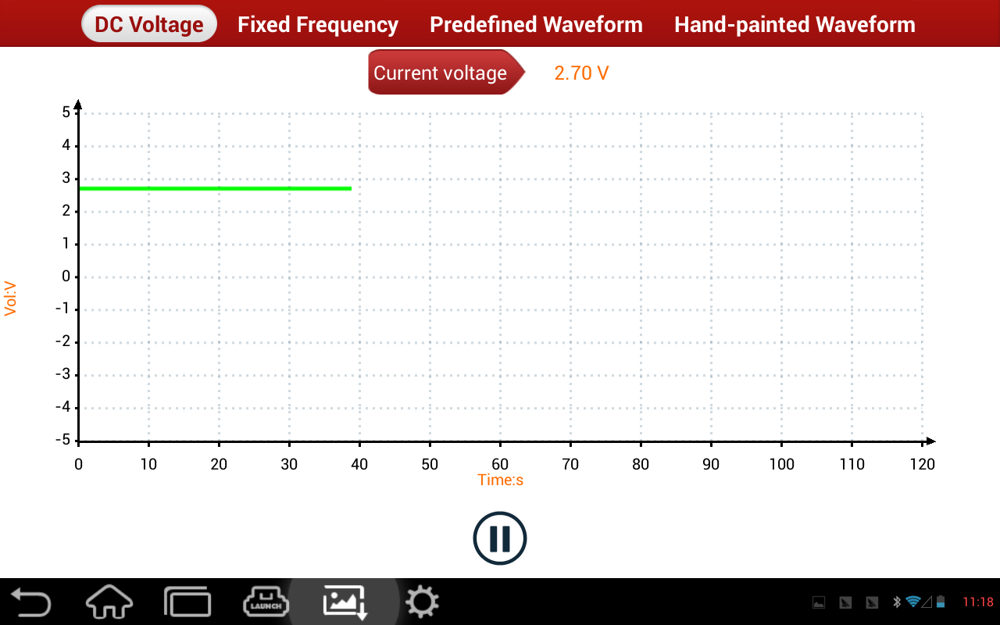

This function outputs -5~+5V DC voltage. Text at the top of the grid displays current voltage. After setting the voltage, click "Start" button at the bottom, the device will then output this specified voltage and display the wave form of current output voltage.
See below image:
|  |
voltage button: Click voltage button, it prompts voltage modification widget. Adjust output voltage or edit textbox value via "+""-" buttons.
Start (Stop): It starts/stops voltage output.